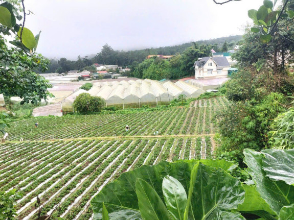
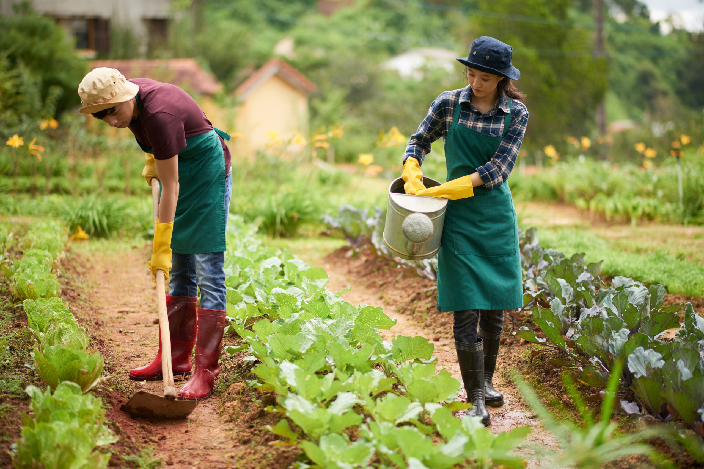
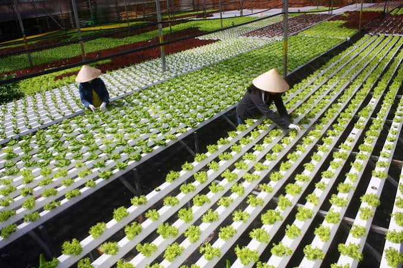
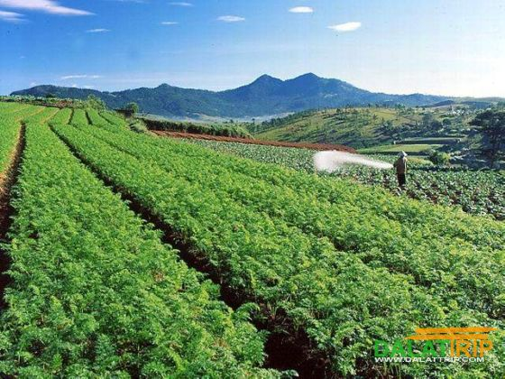
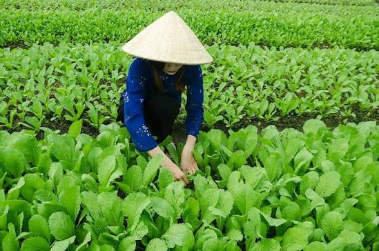
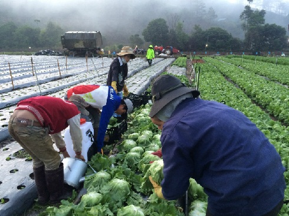
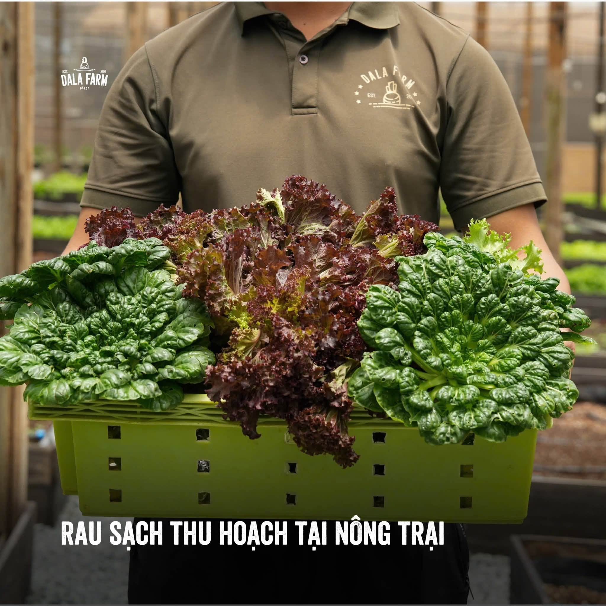
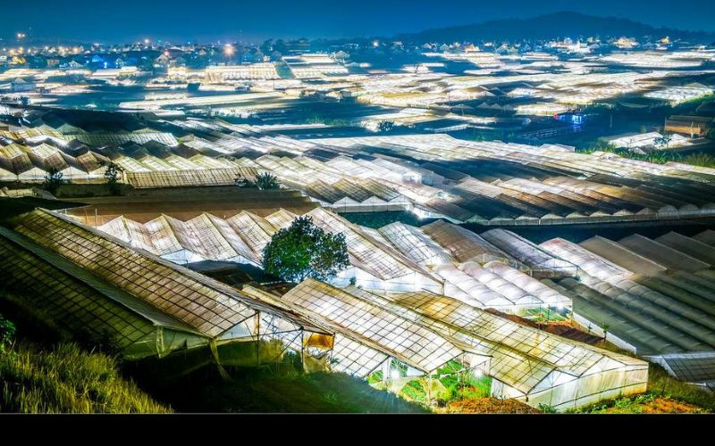
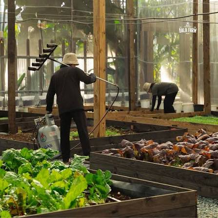

Đất khỏe
Ưu tiên cải tạo đất và duy trì môi trường thuận lợi cho cây sinh trưởng.
Mỗi bó rau Dalat Fresh bắt đầu từ đất, nguồn nước và sự chăm sóc kiên nhẫn của người nông dân. Chúng tôi xây dựng quy trình trồng trọt theo hướng hữu cơ, ưu tiên sức khỏe của đất và chất lượng nông sản.

Chúng tôi nhìn việc trồng rau như một vòng tuần hoàn. Đất được chăm sóc trước khi gieo hạt, cây được theo dõi trong suốt quá trình sinh trưởng và chỉ thu hoạch khi đạt độ phát triển phù hợp.
Quy trình dưới đây mô tả cách một vụ rau đi từ bước chuẩn bị đất đến khi trở thành sản phẩm được đóng gói và đưa đến người tiêu dùng.
Ưu tiên cải tạo đất và duy trì môi trường thuận lợi cho cây sinh trưởng.
Theo dõi cây thường xuyên và chăm sóc phù hợp với từng giai đoạn.
Thu hoạch và xử lý sau thu hoạch để giữ độ tươi của sản phẩm.
Mỗi giai đoạn đều có một mục tiêu riêng: tạo điều kiện tốt cho cây phát triển tự nhiên và giữ chất lượng rau sau thu hoạch.

01Trước khi gieo trồng
Một vụ rau bắt đầu từ việc chuẩn bị nền đất. Đất được làm tơi, làm sạch và bổ sung nguồn dinh dưỡng phù hợp để tạo môi trường thuận lợi cho bộ rễ phát triển.

02Giai đoạn cây non
Hạt giống được lựa chọn phù hợp với điều kiện canh tác. Cây non được chăm sóc trong giai đoạn đầu để phát triển bộ rễ và thân lá khỏe trước khi chuyển ra luống.

03Sau khi cây đủ khỏe
Khi cây giống đạt kích thước phù hợp, cây được chuyển ra luống. Khoảng cách giữa các cây được bố trí để cây có đủ không gian nhận ánh sáng, nước và chất dinh dưỡng.

04Trong suốt thời gian sinh trưởng
Đây là giai đoạn cần theo dõi thường xuyên. Người trồng kiểm tra độ ẩm, tình trạng lá, sâu bệnh và sự phát triển của cây để có biện pháp chăm sóc phù hợp.

05Khi rau đạt độ trưởng thành phù hợp
Rau được thu hoạch khi đạt kích thước và chất lượng phù hợp. Quá trình thu hoạch được thực hiện cẩn thận để hạn chế dập nát và giữ được độ tươi của rau.

06Sau khi thu hoạch
Sau khi thu hoạch, rau được kiểm tra, phân loại và chuẩn bị đóng gói. Mục tiêu là đưa sản phẩm đến người tiêu dùng trong trạng thái tươi, sạch và thuận tiện sử dụng.
Canh tác theo hướng hữu cơ không chỉ nằm ở việc trồng cây mà còn nằm ở cách người trồng chăm sóc đất, nước và môi trường xung quanh.
Duy trì độ tơi xốp và bổ sung nguồn hữu cơ phù hợp để hỗ trợ hệ sinh thái đất.
Theo dõi độ ẩm và cung cấp nước phù hợp với từng giai đoạn sinh trưởng.
Theo dõi sâu bệnh và ưu tiên các phương pháp chăm sóc sinh học khi điều kiện cho phép.
Tối ưu việc sử dụng vật tư và hướng đến quy trình sản xuất thân thiện hơn với môi trường.

Vùng cao nguyên có khí hậu và điều kiện tự nhiên phù hợp với nhiều loại rau. Đây là nền tảng để người trồng xây dựng những mùa vụ đa dạng và lựa chọn phương pháp chăm sóc phù hợp.
Thuận lợi cho nhiều nhóm rau ôn đới.
Là nền tảng cần được chăm sóc trong từng mùa vụ.
Kinh nghiệm thực tế giúp điều chỉnh quy trình theo từng mùa.
Đằng sau mỗi sản phẩm là những công việc lặp lại mỗi ngày: kiểm tra cây, chăm đất, tưới nước, phát hiện sâu bệnh, thu hoạch và phân loại.
Câu chuyện nông trại vì thế không chỉ là câu chuyện của cây rau. Đó còn là câu chuyện về sự kiên nhẫn, kinh nghiệm và trách nhiệm của người trồng.
Chăm cây mỗi ngày để người dùng có thể yên tâm hơn khi chọn rau cho gia đình.

Một ngày làm việc được tạo nên từ nhiều công đoạn nhỏ nối tiếp nhau.
Quan sát cây, đất và tình trạng sinh trưởng.
Rau được chọn và thu hoạch cẩn thận.
Loại bỏ phần không đạt yêu cầu trước khi đóng gói.
Sản phẩm được đóng gói và chuyển đến điểm bán hoặc khách hàng.
Thông tin về vùng trồng, mùa vụ và quá trình xử lý có thể được quản lý theo từng lô sản phẩm. Đây là nền tảng để xây dựng hệ thống truy xuất nguồn gốc minh bạch.
Khám phá những sản phẩm rau củ được tuyển chọn từ câu chuyện nông trại của Dalat Fresh.